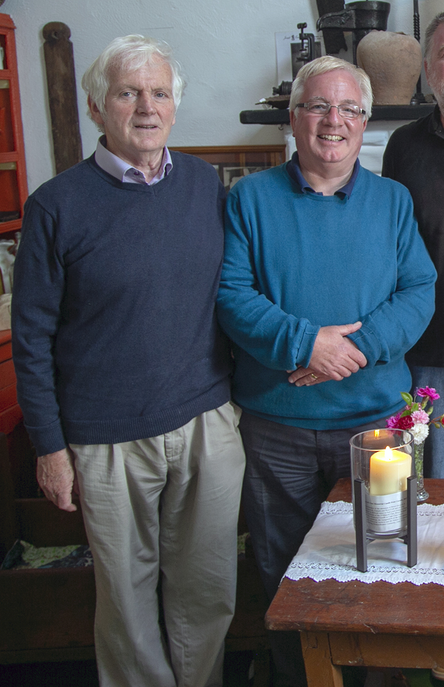

O Driscoll International Memorial Archive
Cape Clear island, Co. Cork is at the heart of the territory over which the O Driscolls held sway for centuries. The Island Museum there, has annually participated in the programme of events of the Annual O Driscoll Clan Gathering re-established in 1986 by an enthusiastic and efficient committee headed by Bernard O Driscoll of Baltimore.
The O Driscoll Clan Gathering members annually visit both Cape Clear and Sherkin islands on O Driscoll Heritage day trips. During the visit to Cape Clear the Clan have an opportunity to visit early Christian sites, view the ruin of Dún an Óir, O Driscoll Castle, visit the O Driscoll Memorial Archive and participate in the International O Driscoll Remembrance Ceremony.

On the occasion of the 25th Anniversary of the O Driscoll Clan Gathering in 2011, the O Driscoll Heritage Exhibition was mounted at Cape Clear Island Museum. A plaque celebrating O Driscoll Worldwide Heritage was unveiled by Bernadette O Driscoll of Baltimore. O Driscoll related documentation from The O Driscoll Collection compiled over a number years by Dr. Éamon Lankford was also exhibited.
The 2011 event gave impetus to a renewed consideration of their family history by clan members. It was decided, to establish an O Driscoll International Memorial Archive, to house and preserve the material, at Cape Clear island, part of the ancestral homeland of each member of today’s worldwide O Driscoll family. A voluntary international advisory council and support group of O Driscoll friends from around the world was soon set up, to spearhead the encouragement of further participation in the recording of family history for inclusion in the archive. To this end, the www.odriscoll.ie website was created. All submissions received are presented both in bound volume and digital format and collectively in the archive called The O Driscoll Collection.
Former chieftains of the O Driscoll Clan Gathering have been invited to become patrons of the O Driscoll Memorial Archive with Éamon Lankford continuing to act as voluntary director. The collecting, archiving and preservation of the family story of O Driscolls worldwide and the affording of an opportunity to O Driscoll family members to remember their deceased loved ones in their ancestral West Cork homeland will continue to be a work in progress for many years to come. The archive was inaugurated by West Cork man Seán O Driscoll, a native of Drimoleague, Co. Cork, during the clan gathering of 2013, with the objective of remembering, honouring and uniting all who form the worldwide O Driscoll family, past and present.

O Driscoll Memorial Archive Collection: Dr. Éamon Lankford & John Driscoll, O Driscoll Clan Chieftain (2015-2017)
In May 2018, Bernie and Patrick McCarthy of Dún na Séad, Baltimore Castle, hosted a pleasant occasion at which 35 bound volumes of The O Driscoll Collection were presented by the compiler Dr. Éamon Lankford to Tim Driscoll, O Driscoll Clan Chieftain (2017-2019), who accepted the data on behalf of the O Driscoll worldwide family and the O Driscoll International Memorial Archive. Among those attending were former Clan Chieftains, Dave Driscoll, UK, John Driscoll, U.S.A., Paul Driscoll, UK, Tim Driscoll UK and Deputy Mayor of Cork County, Cllr. Joe Carroll, and Conor Nelligan, Cork County Council Heritage Officer.
Gathering the O Driscoll Clan Story
The gathering of some of the O Driscoll Clan story by Éamon Lankford began in September 1986 when the O Driscoll Clan Gathering had been re-established. Marie Driscoll and her husband the late Jim Greaney from Hastings New Zealand visited Baltimore and happened to visit Buske’s Bar in the Village for a morning coffee. There, Marie picked up a form issued by Éamon Lankford seeking information on people named O Driscoll. In response she compiled and submitted very interesting information on her family roots, as well as some of their more recent history Her compilation was to be the first step in what, over the years since 1986, has become The O Driscoll Collection for the O Driscoll International Memorial Archive.
Having been closely associated with the O Driscoll Clan Gathering since its inception in 1986, Dr. Éamon Lankford has been gathering documentation relating to the lives of people named O Driscoll at home in Ireland and throughout the world. His absorbing account of the fortunes of the Clan in O Driscolls, Past and Present (2005/ updated, enlarged and republished in 2019) is a comprehensive historical account which highlights the local West Cork origins of the O Driscolls, as well as their power, wealth and influence down the centuries. It also tries to show their wider international and national connections. The constant maritime theme gets particular mention, as well as ecclesiastical, literary and legal ones that have characterised the recorded activities of O Driscolls through the ages. Click here to purchase the book.
An Invitation to remember your O Driscoll Ancestors
Such was the O Driscoll related material gathered over the years, it was in 2013 prudent to take steps to see to its longterm maintenance and preservation in the ancestral home place of the international O Driscoll family of today. The O Driscoll International Memorial Archive at Cape Clear island is dedicated to remembering, honouring and celebrating the lives of all O Driscolls, past, present and of others yet to come. O Driscolls worldwide now and in the years to come are invited to submit to the O Driscoll Archive, an account of their family story, past and present. The donation of a copy of any O Driscoll documentation, published or unpublished or material placed on the internet which relates to anyone descended from an O Driscoll worldwide, past and present will also be much appreciated anytime. It will be preserved in the name of the donor for future O Driscoll family research purposes only. It is the story of the O Driscolls of today that will in The O Driscoll Collection provide for generations, the ‘footprints’ for your descendants to follow. All who have written and those who have yet to write a submission of some of their day to day family story for inclusion in the O Driscoll Memorial Archive are assured of being remembered. Your descendants will remember you for your thoughfulness. In times to come, scholars, researchers and families -communities, will thank you. You and your family deserve to be remembered . For a guide to making a submission of a family account, Click here please
Dr. Éamon Lankford, compiler of The O Driscoll Collection
As of 2020, the O Driscoll Memorial Archive is housed in Cape Clear Island Heritage Centre, Cape Clear, Co. Cork, Ireland. It consists of 37 bound volumes and some 500 documents collectively titled The O Driscoll Collection. The further collection, cataloguing, collating and archiving more of the story of the worldwide O Driscoll family is an on-going voluntary work in progress initiative by the compiler, Éamon Lankford.
O Driscoll Clan Annual Remembrance Ceremony
With the launch of the O Driscoll Memorial Archive in 2013, former O Driscoll Clan Gathering Chieftain Bruce O Driscoll of Canada was invited to bring a candle from New Brunswick to be called The O Driscoll Candle, which was used in a moving Remembrance Ceremony during the 2013 O Driscoll Clan Gathering 2013. A candle representing all who emigrated from Ireland during the terrible Great Famine of 1845-47 was brought to Cape Clear for the Famine Remembrance Exhibition of 1995 by James J. O Driscoll of Long Island, New York. This candle is lit at the start of the Annual O Driscoll Remembrance Ceremony when some person from a selected country across the world who has O Driscoll ancestry is invited to bring a candle : The O Driscoll Candle from their home country and give a brief account of their Driscoll family story and heritage.
The O Driscoll Remembrance Ceremony honours, remembers and celebrates the lives of all who are descended from an O Driscoll who themselves are descended from some person named Ó Drisceoil who at one time lived on O Driscoll held lands in West Cork. The O Driscolls of West Cork are in turn descended from the Corcu Loígde tribe among whom were St. Ciarán, born in Cape Clear island and St. Fachtna of Ros Cairbre / Rosscarbery. All are remembered at the Annual O Driscoll Remembrance Ceremony and all are welcome to attend.
If unable to attend the Clan Gathering one can still participate in the meaningful ceremony. Members of the O Driscoll Memorial committee along with former O Driscoll Chieftains will respectfully call the names of a loved one on their behalf at the next International O Driscoll Memorial Archive Remembrance Ceremony. To participate in the ceremony click here(NOT DONE NOT DONE) please.In the quiet of the O Driscoll Archive, housed in a restored old schoolhouse, all present are invited to reflect for a little while, and then one by one call the name of a deceased ancestor and in so doing let their relatives ‘live again’ for a short while among their own people in a part of the lands of their ancestors.
The O Driscoll Candle (2013-2019)